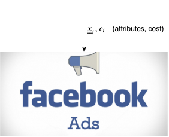
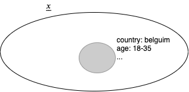
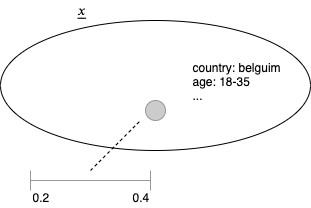
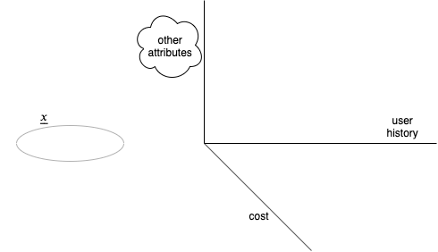
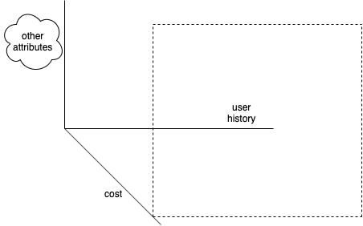
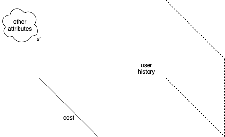

Holdout Groups for
Expensive and Adversarial Settings
Ami Tavory,
Facebook Research, Core Data Science
Presenter console active
Attributes+Const Online System
Online Fraud Detection
and Its Assessment


Classic Holdout Group Solution


Standard Problems


Unique Problem


General Principles


Outline
- Borrowing via Gaussian Processes
- Explore Exploit
- Feature Space and Gaming
- Conclusions, Further Problems
Estimating log(Fraud Counts) As Gaussians


System Based on Gaussian-Process Regression

Outline
- Borrowing Via Gaussian Processes
- Explore Exploit
- Feature Space and Gaming
- Conclusions, Further Problems
Should We Choose this Transaction?

Assessing "High Learnings"
- How much will overall fraud-rate estimate improve, if we take this transaction.
- Suppose for \((\underline{x_i, c_i})\), the current fraud estimate is 0.3

Reducing Comp. Complex. with Preprocessing


Outline
- Borrowing Via Gaussian Processes
- Explore Exploit
- Feature Space and Gaming
- Conclusions, Further Problems
The Feature Space
Interesting Region Example
(High Cost)
Interesting Region Example
(Little Interference)

Probability Chain-Adjustment


$$\begin{align}&P(c_{u, 1}, \ldots, c_{u, n}) = \\
&P(c_{u, 1}) {P(c_{u, 1} + c_{u, 2}) \over P(c_{u, 1})} \cdots
{P(c_{u, 1} + \cdots + c_{u, n - 1} + c_{u, n}) \over P(c_{u, 1} + \cdots + c_{u, n - 1})} =\\
&P(c_{u, 1} + \cdots + c_{u, n - 1} + c_{u, n})\end{align}$$
Outline
- Borrowing Via Gaussian Processes
- Explore Exploit
- Feature Space and Gaming
- Conclusions, Other Problems
Conclusions
- Holdout setting for adaptive adverserial setting
- GPs
- Borrow strength for queries
- Allow explore/exploit
- Must engineer feature space for fraudsters' adaptiveness